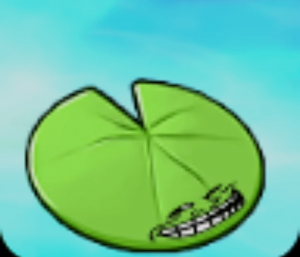
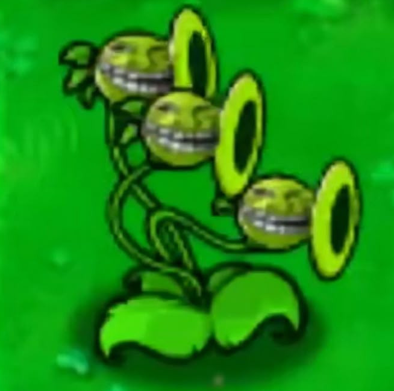
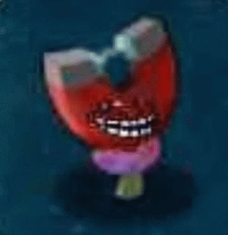

Plantas
Conheça as principais plantas do Plants Vs Zombies
Dia
| Imagem | Nome | Custo de Sol | Descrição |
|---|---|---|---|
 |
Disparervilha | 100 | Disparervilha é a primeira e principal planta de ataque recebida no primeiro jogo Plants vs. Zombies. Ela é uma planta que atira ervilhas, disparando uma ervilha por vez. Suas ervilhas podem ser incendiadas pela Madeira-Tocha para causar o dobro de dano. |
| Girassol | 50 | Girassol é a primeira planta produtora de sol recebida no jogo. Ela produz sol para comprar outras plantas ou usar outros itens. Por isso, é uma das plantas mais importantes no jogo e quase sempre é usada. | |
 |
Cereja-Bomba | 150 | Cereja-Bomba é uma planta de uso único que explode e destrói todos os zumbis em uma área 3x3. Ela tem um tempo de recarga lento. |
| Noz | 50 | Noz é uma planta defensiva de uso único que tem alta resistência. Ela é usada para bloquear a passagem dos zumbis, permitindo que suas outras plantas ataquem. No entanto, ela não causa dano. | |
 |
Mina Terrestre | 25 | Mina Terrestre é uma planta de uso único que detona quando um zumbi se aproxima, destruindo-o. Ela precisa de um tempo para armar após ser plantada. |
| Ervilha Congelante | 175 | Ervilha Congelante é uma planta atacante que dispara ervilhas congelantes. Essas ervilhas causam dano e também desaceleram os zumbis, tornando-os mais fáceis de serem atingidos. | |
| Boca-de-dragão | 150 | Boca-de-dragão é uma planta que pode engolir um zumbi inteiro de uma vez, mas leva um tempo para mastigar e se preparar para o próximo ataque, deixando-o vulnerável. | |
 |
Disparervilha Repetidora | 200 | Disparervilha Repetidora é uma versão mais potente da Disparervilha, atirando duas ervilhas por vez. Ela é essencial para aumentar seu poder de fogo rapidamente. |
Noite
| Imagem | Nome | Custo de Sol | Descrição |
|---|---|---|---|
| Cogumelo Pufante | 0 | Cogumelo Pufante é uma planta de ataque gratuita que dispara pequenos esporos. É ideal para o início das fases noturnas, mas tem um alcance limitado. | |
| Cogumelo Solar | 25 | Cogumelo Solar é uma planta produtora de sol que começa pequena, produzindo pouco sol, mas cresce e produz mais sol ao longo do tempo. É uma alternativa eficaz ao Girassol à noite. | |
| Cogumelo Fedorento | 75 | Cogumelo Fedorento é uma planta que atira fumaça. Sua fumaça atravessa múltiplos zumbis em linha reta e é capaz de atingir zumbis com balão. | |
| Quebra-Túmulos | 75 | Quebra-Túmulos é uma planta de uso único que pode ser plantada sobre lápides em fases noturnas para removê-las, revelando moedas ou liberando espaço para outras plantas. | |
| Cogumelo Hipnotizante | 75 | Cogumelo Hipnotizante é uma planta de uso único que, quando um zumbi o come, o zumbi é hipnotizado e passa a lutar pelas plantas, atacando outros zumbis. | |
| Cogumelo Tímido | 25 | Cogumelo Tímido é uma planta atacante que atira esporos a longas distâncias. No entanto, ele se esconde quando zumbis se aproximam demais, parando de atirar temporariamente. | |
| Cogumelo Congelante | 75 | Cogumelo Congelante é uma planta de uso único que, ao ser ativado, congela todos os zumbis na tela por alguns segundos, dando tempo para suas defesas se recuperarem. | |
| Cogumelo Apocalíptico | 125 | Cogumelo Apocalíptico é uma planta de uso único que causa uma enorme explosão, destruindo zumbis em uma grande área, mas deixando uma cratera que impede o plantio por um tempo. |
Piscina
| Imagem | Nome | Custo de Sol | Descrição |
|---|---|---|---|
|  | Vitória-Régia | 25 | Vitória-Régia é uma planta aquática que pode ser plantada na água. Ela serve como base para plantar outras plantas não aquáticas sobre a água. |
| Abobrinha | 50 | Abobrinha é uma planta de uso único que esmaga o primeiro zumbi que se aproxima em sua linha ou em uma linha adjacente, causando um dano massivo. | |
|  | Tri-Ervilha | 325 | Tri-Ervilha é uma planta que atira ervilhas em três linhas ao mesmo tempo: na linha dela, na linha acima e na linha abaixo. Ótima para cobrir múltiplas faixas. |
| Alga-Marinha | 25 | Alga-Marinha é uma planta aquática de uso único que, quando um zumbi entra em seu alcance, o puxa para baixo d'água e o destrói instantaneamente. | |
| Jalapeño | 125 | Jalapeño é uma planta de uso único que explode em uma linha reta, destruindo todos os zumbis e máquinas naquela linha. É eficaz contra grandes grupos ou Zumbonis. | |
| Espinho | 75 | Espinho é uma planta defensiva que causa dano a zumbis que pisam nela. Também pode danificar objetos como os Zumbonis e veículos. | |
| Madeira-Tocha | 75 | Madeira-Tocha é uma planta que incendeia as ervilhas que a atravessam, dobrando o dano causado por plantas como Disparervilha e Repetidora. | |
| Noz Alta | 125 | Noz Alta é uma planta defensiva com altíssima resistência. Ela é mais alta que a Noz comum, impedindo que zumbis saltadores como o Zumbi Saltador de Vara pulem sobre ela. |
Nevoeiro
| Imagem | Nome | Custo de Sol | Descrição |
|---|---|---|---|
| Cogumelo do Mar | 0 | Cogumelo do Mar é uma planta aquática que atira esporos. É a versão aquática do Cogumelo Pufante, gratuita e ideal para defesas iniciais na piscina com neblina. | |
 |
Lanterna | 25 | Lanterna é uma planta que ilumina uma área ao seu redor, dispersando a neblina. Essencial nas fases de neblina para enxergar os zumbis se aproximando. |
| Cacto | 125 | Cacto é uma planta que atira espinhos que podem atingir zumbis aéreos, como os zumbis com balão. No chão, seus espinhos podem danificar zumbis terrestres. | |
| Soprador | 100 | Soprador é uma planta de uso único que, ao ser ativada, sopra uma forte rajada de vento que remove todos os zumbis com balão e neblina da tela. | |
| Ervilha Dividida | 125 | Ervilha Dividida é uma planta que atira ervilhas para frente e para trás. Ela atira duas ervilhas para frente e uma para trás, sendo útil contra zumbis que se aproximam da retaguarda. | |
| Fruta-Estrela | 125 | Fruta-Estrela é uma planta que atira projéteis em cinco direções diferentes (estrela), atingindo zumbis em várias linhas ao redor dela. | |
| Abóbora | 125 | Abóbora é uma planta defensiva que pode ser plantada sobre qualquer outra planta, adicionando uma camada extra de proteção. Funciona como uma armadura para suas plantas. | |
|  | Cogumelo Magnético | 100 | Cogumelo Magnético é uma planta que pode remover itens metálicos dos zumbis, como baldes, capacetes e escadas, tornando-os mais vulneráveis. |
Telhado
| Imagem | Nome | Custo de Sol | Descrição |
|---|---|---|---|
| Dispara-Repolho | 100 | Dispara-Repolho é uma planta que atira repolhos em arco, podendo acertar zumbis que estão atrás de defesas, como os Zumbis Escavadores. | |
 |
Vaso de Flores | 25 | Vaso de Flores é um item essencial nas fases de telhado. Ele é plantado sobre o telhado inclinado e permite que outras plantas sejam plantadas sobre ele. |
| Dispara-Milho | 100 | Dispara-Milho é uma planta que atira grãos de milho que causam dano leve, ou manteiga que paralisa os zumbis por um curto período. | |
| Grão de Café | 75 | Grão de Café é uma planta de uso único que, quando plantada sobre um cogumelo, o acorda e permite que ele funcione durante o dia. | |
| Alho | 50 | Alho é uma planta defensiva que desvia zumbis para outras linhas. Quando um zumbi morde o Alho, ele é forçado a mudar para uma linha adjacente. | |
| Folha de Guarda-Chuva | 100 | Folha de Guarda-Chuva é uma planta defensiva que protege as plantas ao seu redor de ataques aéreos, como os projéteis de Zumbis Arremessadores. | |
| Calêndula | 50 | Calêndula é uma planta produtora de moedas. Ela não ataca, mas periodicamente produz moedas que podem ser coletadas para ganhar dinheiro. | |
| Dispara-Melancia | 200 | Dispara-Melancia é uma planta que atira melancias em arco, causando dano pesado e em área. É a versão melhorada da Dispara-Repolho. |